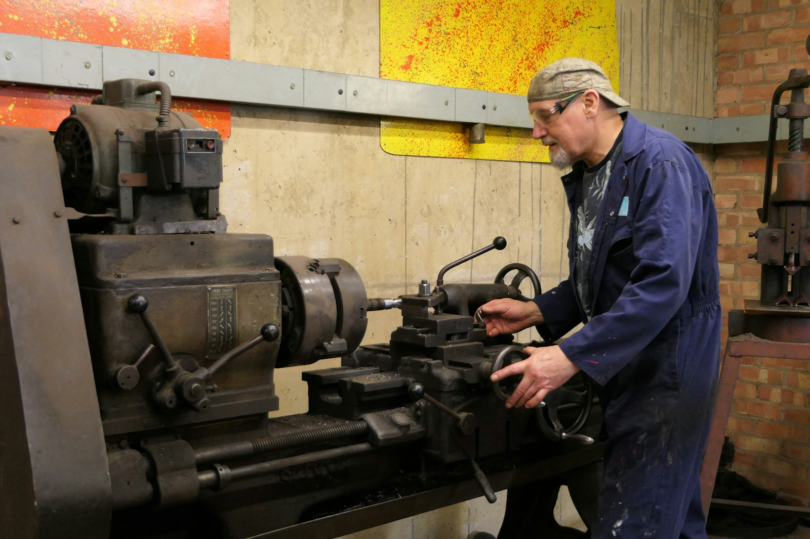

会社概要
ドンアインのステンレス・鉄加工工場。
VN - NIKKO機械有限会社は、家庭用品、建築金物、家具フレーム、5S用品、工業団地向け製品、図面指定部品の各分野で、受注生産およびサンプルに基づく製品加工をお受けしています。

ごあいさつ
お客様ならびにパートナーの皆様へ
平素より、VN - NIKKO機械有限会社の製品・サービスにご関心をお寄せいただき、誠にありがとうございます。お客様ならびにパートナーの皆様に心よりご挨拶申し上げます。
VN - NIKKOは、ご家庭、施工業者、工場の皆様に、サンプル通りに仕上がり、耐久性があり、納期を守るステンレス・鉄製品をお届けしたいという思いから設立されました。レーザー切断機、CNCベンダー、溶接機、仕上げラインを自社工場に導入し、1個のご注文でも数千個のご注文でも、各工程の品質を自社で管理しています。
協力、透明性、共に成長するという姿勢のもと、お客様ならびにパートナーの皆様と末永くお付き合いできることを願っております。
敬具VN - NIKKO機械有限会社 経営陣
企業情報
会社の登記情報。
企業登記情報です。契約書、請求書、サプライヤー資格書類の作成時にご利用ください。
- 企業名
- CÔNG TY TNHH CƠ KHÍ VN - NIKKO
- 税コード
- 0109788075
- 所在地
- Đường số 2, Ấp Sáp Mai, Xã Võng La, Huyện Đông Anh, Thành phố Hà Nội, Việt Nam
- 主要業種
- 鉄・鋼・鋳鉄の製造
- 金属鋳造
- 金属部品の製造
- 機械加工・金属処理
ビジョン
サンプル通りに作り、納期を守ることで、ご家庭、施工業者、ベトナム北部の工業団地の工場から選ばれるステンレス・鉄加工工場になること。
ミッション
お客様の図面、サンプル、アイデアを、丈夫で美しく寸法通りの製品に、適正なコストで形にすること。
大切にする価値観
- 01
サンプル通り
図面通り、承認済みサンプル通り、見積もり時の材料グレード通りに製作します。
- 02
納期厳守
実際の生産能力に基づいて納期をお伝えし、約束を守ります。
- 03
誠実
明確なお見積もりを提示し、対応できること・できないことを率直にお伝えします。
- 04
真心
ご予算に合った材料と製作方法をご提案し、納品後もサポートします。
品質へのこだわり
品質管理は工程ごとに。
単品から量産まで、すべてのご注文に4つの管理ポイントを適用しています。
見積もり通りのステンレスグレード
見積書にステンレスのグレードを明記し、受け取り時に試薬で確認していただけます。
量産前のサンプル承認
量産に入る前に、サンプル品の寸法と仕上がりをお客様に確認していただきます。
きれいな溶接、均一な表面
ステンレスの溶接部は研磨・焼け取りを行い、表面はヘアラインまたは鏡面で均一に仕上げます。
窓口はひとつ
切断、曲げ、溶接、塗装を同じ工場で行うため、下請け業者間で責任が分散しません。